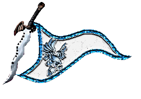
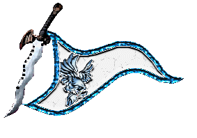

|

|
Das schwarze Brett
|
|
| Übersicht,
Anschläge und Stammtisch (RPG) |
|
Nationswerber hergehört (1  ) )
|
| Misha Theredith (RIP) |
*schmunzelt bei dem anschlag*
recht so
vieles wird erzählt und nihct eingehalten, kriege gefürt weil alle einem hinterher rennen, freundschaften leichtsinnig verteilt
auch ich stellte einst einen ähnlichen anschlag ans brett, bekam jedoch auch einige tauben mit tauglichen nationen, zumeist jedoch erfüllten sie einen standpunkt nicht
doch eure anforderungen sind geringer als die meinen damals, so bin ich mir sicher ihr findet wonach ihr sucht, nur mut
Lady Misha
Zur 7. Stunde am 14.Blumenmond im Jahre 429 |
04.06.07 8:13
|
|
Xilebo von Troja
   |
*liest den Anschlag und lacht*
Ein Dickkopf wie er im Buche steht!
Aber verzweifelte Nationen, die auf solche Bedingungen eingehen scheint es ja auch genug zu geben.
*leise zu Murksi Mistgabel* Fals Ihr noch einen Platz zum Siedeln ohne wesentliche Verpflichtungen sucht, so schreibt mich doch bitte an.
Baron Xilebo,
Vorsteher von Troja,
Anführer der glorreichen Nation "Trojaner",
König der Narren
Zur 22. Stunde am 16.Blumenmond im Jahre 429 |
04.06.07 23:04
|
|
Luzi ni Mur
  |
Dickkopf... verzweifelt... *auf Xils Nationsflagge guckt und die eigene gekonnt ignoriert * Stimmt, sowas solls geben *grinstfrech*
Luzi ni Mur,
Anführerin der glorreichen Nation "Breariach"
Zur 8. Stunde am 18.Blumenmond im Jahre 429 |
05.06.07 6:57
|
|
| DoomsdayProphet (RIP) |
Nur wenige Tage auf der Scherbe und schon entfacht Murksi Mistgabel einen Wind, der seines gleichen sucht. Erinnert mich irgend wie schwer an eine Person namens Piere Montana. Dieser trat ähnlich populistisch auf - und verschwand ebenso schnell wieder von der Bildfläche.
DoomsdayProphet,
Priester im Dienste des einzig wahren Glaubens an Urvan,
Anführer der glorreichen Nation "Mad Phoenix Empire",
Großadmiral des Empire
Zur 17. Stunde am 18.Blumenmond im Jahre 429 |
05.06.07 9:10
|
|
Luzi ni Mur
|
Ich dachte schon du meinst was anderes mit ´einem Wind, der seines gleichen sucht´ *grinstfrech*
Luzi ni Mur,
Anführerin der glorreichen Nation "Breariach"
Zur 9. Stunde am 20.Blumenmond im Jahre 429 |
05.06.07 18:26
|
|
| Thalion d Eglanmîl (RIP) |
ye yett war genauso auf ihre art. zwar lebt sie noch hier, ihr feuer zeigt sie aber nicht mehr.
Freiherr Thalion d Eglanmîl,
Vorsteher von Magie des Aquamarins
Zur 11. Stunde am 20.Blumenmond im Jahre 429 |
05.06.07 18:45
|
|
Frathag Graubart
  |
Werter Herr Mistgabel,
seid euch versichert, dass es durchaus andere Leute gibt, denen nichts an Unterordnung liegt, die sich nicht in andererleuts Kriege einmischen wollen und die ihr Eigentum behalten wollen. Offen gestanden höre ich zum ersten Mal, dass man von seinen Karawanenerträgen einen Zehnt abgeben sollte.
Dass es solche Leute gibt, heisst aber nicht, dass sie auf der Suche nach Unruhestiftern als Siedlern sind, davon gibt es in einigen Fällen wohl schon genug.
Es verbleibt höflichst,
Baron Bruder Frathag Graubart,
Vorsteher von Bel en Orod
Zur 11. Stunde am 20.Blumenmond im Jahre 429 |
05.06.07 18:49
|
|
Übersicht,
Anschläge und Stammtisch (RPG)
|
|
|
|